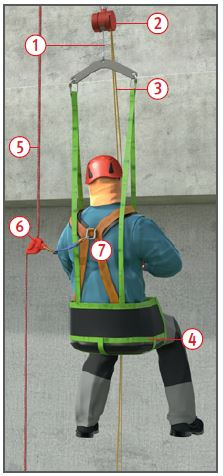
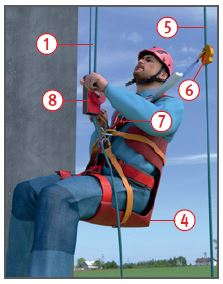
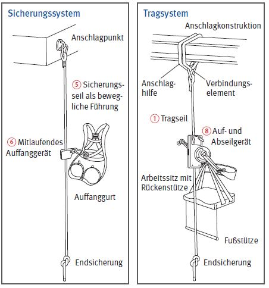

Handbetriebene Arbeitssitze
|
|

Legende
 |
Tragseil |
 |
Handbetriebene Trommelwinde |
 |
Endlosseil zum auf- oder abwickeln des Tragseils |
 |
Arbeitssitz |
 |
Sicherungsseil |
 |
Auffanggerät mit Verbindungselement/-mittel |
 |
Auffanggurt |
Gefährdungen
- Unterdimensionierte Anschlageinrichtungen für das Trag- und
Sicherungssystem sowie ein
nicht gesicherter Zugang bei
einem hochgelegenen Einstieg
in den Arbeitssitz kann zu Absturzunfällen
führen.
Allgemeines
- Arbeitssitze nur einsetzen, wenn der Einsatz von stationären Arbeitsplätzen (z. B. Gerüste), bodenverfahrbaren Arbeitsplätzen (z. B. Fahrgerüste) oder kraftbetriebenen höhenverfahrbaren Arbeitsplätzen (z. B. Hubarbeitsbühnen) nicht möglich ist.
- Jeden ersten Einsatz am
Objekt der Berufsgenossenschaft
14 Tage vorher schriftlich
anzeigen.
- Arbeiten im Arbeitssitz nur
durch fachlich und körperlich
geeignete Personen ausführen
lassen.
Die fachliche Eignung kann
durch Teilnahme an Lehrgängen
für Höhenarbeiter nachgewiesen
werden.
- Einsatz eines Aufsichtführenden
für maximal 5 Höhenarbeiter.
- Wenn keine ständige Überwachung sichergestellt ist,
mindestens 2 Höhenarbeiter je
Arbeitsstelle einsetzen.
- Sicherstellen, dass im
Rettungsfall die Erste Hilfe
innerhalb 15 Minuten gewährleistet
werden kann.
- Vor Arbeitseinsatz schriftlich
die erforderlichen Sicherheitsmaßnahmen
festlegen.
Schutzmaßnahmen
- Vor Beginn der Arbeiten Verfahren
zur Rettung festlegen und
Rettung praktisch üben.
- Im Arbeitssitz nicht länger als
2 Stunden arbeiten.
- Keine periodisch wiederkehrenden Arbeiten, z. B.
Reinigungsarbeiten, ausführen.
- Arbeitssitze nicht zum Transport
von Lasten einsetzen.
- Von Arbeitssitzen darf nicht
gearbeitet werden, wenn
- das Gewicht des mitzuführenden
Werkzeuges und Materials
10 kg überschreitet,
- die Windangriffsfläche von
mitgeführten Gegenständen
mehr als 1,00 m2 beträgt,
- von vorhandenen oder benutzten
Stoffen und Arbeitsverfahren zusätzliche Gefahren
ausgehen, z. B. Arbeiten mit
Säuren, Laugen, Heißbitumen.
- Eine Gefährdung besteht auch
bei einer unzulässigen seitlichen
Seilauslenkung.
- Für das Auf- und Abseilen müssen
beide Hände frei sein.
- Arbeiten bei aufkommendem
Gewitter oder einer Windstärke
von mehr als 6 nach der Beaufortskala
einstellen.
- Verfahrbare oder schwenkbare
Auslegerkonstruktionen gegen
unbeabsichtigtes Bewegen
sichern.
- Vor Arbeitsbeginn täglich Sicht- und
Funktionsprüfung durchführen.
- Nur EG-baumustergeprüfte
(CE-Zeichen) Tragseile, Auf- und
Abseilgeräte, Arbeitssitze und
Auffangsysteme einsetzen.
- Bei gegengewichtsbelasteten
Auslegerkonstruktionen die vorgesehene
Ballastierung sowie
angegebene Abstände einhalten.
- Die Festigkeit von Auslegerkonstruktionen
als Anschlagpunkte
rechnerisch nachweisen.

Legende
|
Tragseil |
|
Arbeitssitz |
|
Sicherungsseil |
|
mitlaufendes Auffanggerät mit Verbindungselement/-mittel |
|
Auffanggurt |
 |
Handbetriebene Personenwinde |
Zusätzliche Hinweise zu den Systemen
- Grundsätzlich unabhängige
Anschlageinrichtungen für das Trag- und
Sicherungssystem vorsehen.
- Das Tragsystem besteht aus:
- Anschlageinrichtung (Anschlagpunkt, Anschlaghilfe, etc.),
- Verbindungselement/-mittel,
- Tragseil ,
- Auf- und Abseilgerät ,
- Arbeitssitz .
- Für das Anschlagen bzw.
Befestigen an baulichen Einrichtungen ist eine Last von 9 kN
anzusetzen.
- Das Sicherungssystem besteht aus:
- Anschlageinrichtung (Anschlagpunkt, Anschlaghilfe, etc.),
- Verbindungselement/-mittel,
- Auffangsystem nach DIN EN 353-2,
- mitlaufendes Auffanggerät einschließlich beweglicher Führung (Sicherungsseil ),
- Auffanggurt .
- PSA gegen Absturz nur an geeigneten Anschlageinrichtungen befestigen.
- Anschlagmöglichkeiten an Teilen baulicher Anlagen können zur Befestigung genutzt werden, wenn deren Tragkraft für eine Person mit einer Fangstoßkraft von 9 kN einschließlich der für die Rettung anzusetzenden Lasten nachgewiesen ist.
- Der Unternehmer oder ein fachlich geeigneter Vorgesetzter hat die Anschlageinrichtungen festzulegen.
- Benutzung von PSAgA und Rettungsausrüstungen ist nur zulässig, wenn im Rahmen der Unterweisung, dem späteren Einsatzgebiet entsprechend, praktische Übungen durchgeführt wurden.

Während bei der Bauart A zur Sicherung der Person am Sitz eine Haltevorrichtung vorhanden sein muss, ist bei Bauart B zusätzlich zum Sitz ein
Auffanggurt zu verwenden. Beide Bauarten bestehen aus einem Trag- und Sicherungssystem.
Prüfungen
- Art, Umfang und Fristen erforderlicher Prüfungen festlegen
(Gefährdungsbeurteilung) und
einhalten, z. B.
- vor jeder Inbetriebnahme auf
ordnungsgemäßen Zustand
durch den Höhenarbeiter,
- nach Bedarf, mind. 1 x jährlich
durch eine "zur Prüfung befähigte Person".
- Ergebnisse durch die "zur
Prüfung befähigte Person" dokumentieren.
Arbeitsmedizinische Vorsorge
- Arbeitsmedizinische Vorsorge
nach Ergebnis der Gefährdungsbeurteilung
veranlassen (Pflichtvorsorge)
oder anbieten (Angebotsvorsorge).
Hierzu Beratung
durch den Betriebsarzt.
07/2021